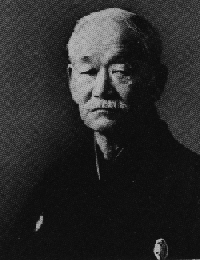

|  |

| The art of Kodokan Judo was
derived from the bujutsu (ancient martial or
warlike) arts of feudal Japan. Predominant among
these arts was that of jujitsu. The founder of
Kodokan Judo (Judo for short) was Dr. Jigoro
Kano, a Rhodes Scholar, and a noted educator in
Japan, who took the art of judo and used hi
influence to establish in Japanese school. This
art was the instrument that put judo on the world
stage and later into the Olympic Games. Today,
the sport and art of judo is practiced in over 92
countries throughout the world. Since Jujitsu school were in a state of disrepute by the members of Japanese society for being too violent, many of the jujitsu schools came together. Kano's judo was an amalgamation of some of the more popular jujitsu schools of Japan. Prominent among these were the Tenshin Shinyo Ryu and the Kito Ryu schools. When asked why the term judo was used instead of jujitsu, Kano replied "What I teach is not simply jujitsu. Of course I teach jujitsu, but it is upon 'do' (way or principle)." In addition to encompassing the best of many jujitsu arts, Kano's judo also reflected a broader range of techniques. Judo is still encompassing the five elements of defense as used in old jujitsu: throwing, grappling, joint locks, strangulation and striking (striking is only practiced in kata or formal forms, and not in competition). The old methods have been refined and modified to take in sport as well as methods of fighting which reflect modern society. In 1964, judo was officially accepted as a sport in the modern Olympics, and has participated in every Olympics ever since. |

[Home]